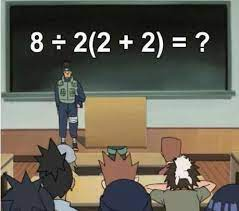

4 + 9[1] 134 + 9[1] 134 -
3 *
1[1] 1Calculadora científica
(4 + 5 ) * 7 - (36/18)^3[1] 55Podemos explorar los resultados de los términos con la ejecución parcial de la expresión…
Reto matemático que se volvió viral en las redes sociales

Existen varias soluciones, según método que se aplique:
PEMDAS = 1
Paréntesis < Exponentes < Multiplicación < División < Adición < Sustracción
BODMAS = 16
“Brackets” - paréntesis/llaves < “Orders” (potencias y raíces) < División < Multiplicación < Adición < Sustracción
Cómo opera R?
Estilos de programación. Se puede decir que hay diferencia de estilos al programar: algunos adoptan sintaxis mas compacta y otros con mayor espaciamiento. Lo importante a tener en cuenta es que nuestros códigos deberían ser facilmente interpretados por otros.
(3+(5*(2^2))) # difícil de leer[1] 233 + 5 * 2 ^ 2 # si se recuerdan las reglas, todo bien[1] 233 + 5 * (2 ^ 2) # si se olvidan algunas reglas, esto podría ayudar[1] 234 > 3[1] TRUE4 == 4[1] TRUE4 != 4[1] FALSE4 != 3[1] TRUE1 >= -9[1] TRUERevise la Tablas resumen de operadores aritméticos y lógicos.
5 + 3 * 10 %/% == 15
Podemos almacenar valores en variables usando el operador de asignación <-
Ejecute el siguiente código y vea que ocurre en el environment (“memoria RAM”):
x <- 1/40Esta asignación no muestra el valor, sino que lo almacena para más adelante en algo llamado “variable”. Que contiene x?
x[1] 0.025Ctrl + r ……. run code
Alt - …… <-
Ctrl + Alt + i …… insert chunk
De ahora en mas, x se puede usar en cualquier cálculo numérico
x <- x + 1 # observen cómo RStudio actualiza/sobrescribe x en la pestaña superior derecha
y <- x * 2El lado derecho de la asignación puede ser cualquier expresión de R válida. La expresión del lado derecho se evalúa por completo antes de que se realice la asignación.
También verán que es posible utilizar el operador = para la asignación
x = 1/40Esta forma es menos común entre los usuarios R (se recomienda usar <-, y reservar = para completar los argumentos de las funciones).
Como dijimos, los paquetes son básicamente un conjunto de funciones generadas por los autores de los mismos pero el usuario puede crear sus propias funciones.
Componentes de las funciones:
nombre_funcion(argumentos)
Nombre: Generalmente, el nombre es intuitivo, por ejemplo, mean es la función que calcula la media, round es la función que redondea un número. (Como habrán notado R está en inglés)
Argumentos: Un argumento es un marcador de posición. Cuando se invoca una función, se debe indicar valores a los argumentos. Los argumentos son opcionales; es decir, una función puede no contener argumentos. También los argumentos pueden tener valores por defecto.
Para chequear la info de la función, solo basta con seleccionar todos sus caracteres + F1
sqrt(3) [1] 1.732051# 3^0.5
# 3^(1/2)
log(10) # logaritmo natural[1] 2.302585exp(2.302585)[1] 9.999999Ejecute en su script los 6 ejercicios del siguiente link
Funciones básicas pero con argumentos
round(4.3478) [1] 4round(4.3478, digits=3) [1] 4.348round(3.5)[1] 4round(4.5)[1] 4# Pares para abajo, Impares para arriba1 - Espacios en blanco: podemos o no dejar espacios para que el código se pueda ordenar de forma adecuada y poder entenderse. Lo que no se puede es separar las letras componentes de objetos
plot( pressure )
plot(pressur e)2 - Se distinguen las mayúsculas y minúsculas (“case sensitive”): para variables en el código, podemos crear diferentes variables con nombres iguales pero alternando mayúsculas y minúsculas.
Plot(pressure)3 - Se pueden incluir comentarios: como vimos anteriormente los comentarios se utilizan para añadir información en el código. De paso observamos que
plot(pressur e) # da error
# grafico press vs temp
plot(pressure)4 - El punto y coma (;) actúa como separador de comandos aún en la misma línea del script!
pressure; plot(pressure)5 - Los nombres de las variables pueden contener letras, números, guiones bajos y puntos, pero NO PUEDEN:
Cada uno adopta su propia forma para nombres largos de variables, por ej:
No importa como lo adopten, pero es aconsejable ser consistente.
?sd; ??sd; F1 sobre la funciónGooglear: r generate a sequence of uppercase letters
Stack Overflow en inglés / Stack Overflow en español / RStudio: comunidades altamente activas por los usuarios de R y otros lenguajes de programación.
R Mailing Lists: especificas de cada área de la ciencia.
¿Cómo hacer una buena pregunta en las comunidades?
Ser conciso pero gentil…
Ser reproducible: su código debe correr en cualquier máquina. La comunidad no irá a ayudarle si no pueden reproducir su error (detallar paquetes y versión de R en caso necesario)
| Operador | Detalle |
|---|---|
| `x + y` | Suma de x e y |
| `x - y` | Resta de x menos y |
| `x * y` | Multiplicación |
| `x / y` | División de x por y |
| `x %/% y` | Parte entera de la división de x por y |
| `x %% y` | Resto de la división de x por y |
| `x ^ y` | x elevado a y-ésima potencia (equivalente a **) |
| Operador | Prueba.lógica |
|---|---|
| x < y | x menor que y? |
| x <= y | x menor o igual que y? |
| x > y | x mayor que y? |
| x >= y | x mayor o igual que y? |
| x == y | x igual que y? |
| x != y | x diferente que y? |
| Operador | Detalle |
|---|---|
| `sqrt(x)` | raiz de x |
| `exp(y)` | exponencial de y |
| `log(x)` | logaritmo natural de x = ln |
| `log10(x)` | logaritmo base 10 de x |
| `sum(x)` | suma todos los elementos de x |
| `prod(x)` | producto de todos los elementos de x |
| `round(x, n)` | redondea x a n-digitos |
| Teclas | Detalle |
|---|---|
| Alt+Shift+K | panel de todos los atajos |
| Ctrl+Z / Ctrl+Shift+Z | undo/redo |
| Alt+ - | <- |
| Ctrl+r | corre la línea/bloque completa de código |
| Ctrl+l | limpia la consola |
| Ctrl+Shift+c | silencia la línea de código |
| Ctrl+Shift+d | duplica la línea de código |
| Ctrl+i | indexa el bloque de código |